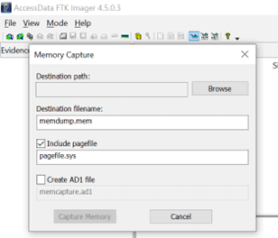
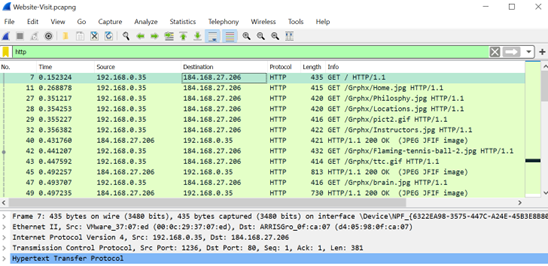
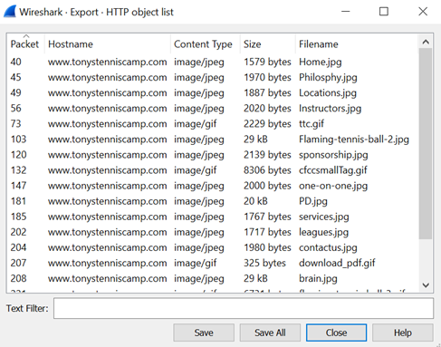
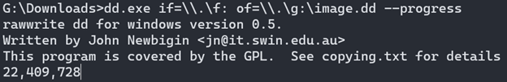
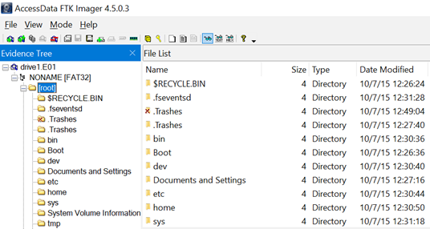
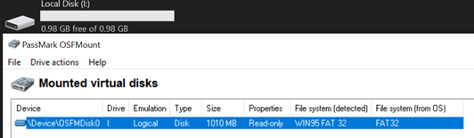
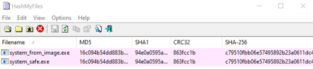
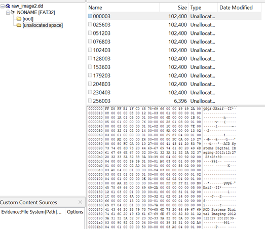
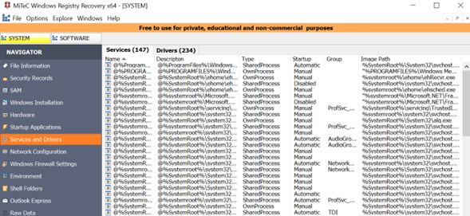
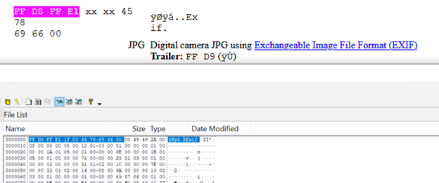

ITC 4344: Digital Forensics
Digital Forensics Needs
Cybercrime-related corporate attacks are a rapidly rising concern in most all fields and types of companies throughout the whole world with the proliferation of the global internet. These crimes can be executed in a significantly different manner from traditional offences, not requiring physical offenders to be on the scene of the crime, lacking evidence created from physical exchanges such as fingerprints or genetic material, and having the potential to be automated and executed in a largely shorter time than break-ins or otherwise.
For some of these reasons, digital evidence for a crime will likely not be clear (as would, say, the presence of physical evidence such as blood, fingerprints, or signs of tampering) to the users or managers of the relevant devices (or the perpetrators themselves) who could very easily or unknowingly tamper with or corrupt this evidence, making tracking down the culprits more difficult. Continued unchecked use of compromised devices can also aid in the propagation of malware both on the attacked devices themselves and possibly others, spreading throughout the company network to cause even further damage to the business with time that could have been avoided.
Along with this relative ease of execution and lack of evidence, the widespread transition to storing and use of most, if not all, important company materials on digital means implies that perpetrators may be able to acquire direct access to any amount of information that could threaten the company and/or benefit the actors.
As such, cybercrimes need to be actively safeguarded against both proactively and immediately after the realization that one may have occurred, following proper pre-delineated procedures to secure clean samples of suspected evidence which will then hopefully swiftly lead to the identification and persecution of the guilty actors. As with any crime, identifying who carried it out, for what reasons, and—perhaps most importantly for our case—how the crime was executed, are vital in protecting the victims against similar events in the future. This is especially true in the case of “insider jobs”, acts believed to have been committed by individuals inside the company who would have continued unfettered access to vital infrastructure until they are properly identified, terminated, and persecuted.
Procedure
Forensic investigation is inherently a creative and flexible process, since it is borne from a need for discovering what has been enacted and by whom. Though it is begun with some assumptions with regards to the type of crime or its possible effects, there is no telling what the full extent it is and what will be uncovered by the end of the investigation. Despite this, a well-structured forensic process needs to at least serve as the outline for the investigation to ensure that the methods employed will be forensically sound and adhere to forensic, as well as legal, principles, the tools used should be known and established, and all acts should be organized and coordinated to aid in efficient (both relating to time and expenditures) operations, following a proper chain of custody through full documentation of the transportation of devices between team members and the actions taken on those devices.
These principles are put in place to verify that any actions taken during the forensic process are appropriate, the evidence is valid, nothing has been contaminated through improper handling, and thus all proof presented during the final reports can be substantial and reliable for the following business or legal proceedings. Thus, an outline can be drawn as a series of procedures to follow for security and completeness reasons while still allowing for the flexibility to adapt depending on the findings encountered.
Identification
Firstly, the initial response and identification process. When the information arrives that some systems have or may have been attacked, a first responder must be dispatched on the scene to secure and identify the relevant equipment. Based on the original report that led to the start of the investigation, the researchers may make some assumptions on the type and scope of the attack, informing them of which systems they will need to investigate and in which order. It will be their responsibility to take note of the state of the relevant devices or locations be they physical (tamper evidence on the server room entry) or digital (abnormal resource consumption, response times), of who was known to have been last using the devices, the time and date of evidence acquisition, and any forensic methods that will thereafter be applied. They should also work with the company to communicate their suspicions and confirm they will be given swift access to the company devices and resources that are deemed relevant to the investigation.
If any of the pertinent devices are still running at that time (most likely with servers or permanent employee workstations) it should be known immediately, as different steps should be taken to secure data residing in volatile memory that could be lost at any moment due to further system operation or shutting down. Dead or powered-off systems, once physically acquired by the investigators, are of course also vital but can be investigated with relative leisure in comparison.
If there are any reasons to believe the incident was not a one-off attack and the systems may have been infected with malware that will try to propagate through the network or are being actively controlled by an outside machine, it may be pertinent to physically sever the connection with the network to avoid jeopardizing other devices within it. On the other hand, this would prevent investigators from performing live network traffic analysis on those devices to determine just that.
Collection
Following identification the team should collect data from the devices and duplicate them in a forensically sound manner, meaning using safeguards and specialized methods to produce true duplicates that are trusted to be truly accurate to the environment that is being investigated and constitute, thus, reliable evidence.
For live system-specific data collection the easiest and most obvious methods are screengrabs and quick checks of running processes, but a full duplication of the running memory and cache to a non-volatile storage medium for later review could be immensely beneficial. Tools such as FTK imager can easily produce a full capture of the RAM and pagefile into a file for this purpose. Memory analysis tools such as Volatility will then be used to inspect the memory contents and processes more carefully.

As mentioned previously, live network traffic capture may also be useful in identifying any ongoing automated or manual activity to and from the attacked devices (such as malware “phoning home” to the culprit’s server address or attempting to infect other devices in the network), again though at the risk of actively endangering further tampering, infections, or even remote data wiping from the perpetrator to cover their tracks. The more ideal scenario would be the presence of pre-existing traffic captures (only really likely on servers) that might have taken caught data exchanges that took place at the time of the actual attack. Wireshark will allow for a quick general investigation and filtering of suspicious traffic, and even allow for retrieving previously exchanged information such as pages or images from accessed websites.


Regardless, the machines will eventually need to be shut down to preserve the condition of the storage from changing and allow extraction of non-volatile storage data. The team will undoubtedly need to remove the drives and make full, untampered duplicates of all data within. To safeguard against accidental interfering the drives will need to be mounted as read-only either through a physical device for that purpose, or OS/registry options on the investigator’s device to produce the same result.
With these protections in place, we can image the devices more securely. There are multiple methods/file formats to this end with different goals. Raw images, such as those produced by dd, are intended to be 1-to-1 bit-accurate mirrors of the original drive for fast and simple backup/restoration and are easy to investigate, mount, and observe with standard Linux tools. However, the E01 format has native compression to take up less space and is optimized for checksumming and large searches of its contents. It would not be a bad idea to capture images using multiple formats for parity and verification purposes.


The original drives then need to be stored aside following proper chain of custody, guaranteeing no further changes to their original contents are made at any point and all forensic processes are thereby performed on the collected disk images only.
Examination
To examine and access our drive images, we may browse their contents while keeping them in their image format (not unlike browsing the contents of a .zip file) or mount the image as an emulated real physical device on our forensic machine. While the former method ensures the files are viewed in a “dormant” state, as if they are frozen in time with no risks of accidentally running some illicit software on them, mounting the image allows investigators to interact with the files in a more usual manner, for example to scan them using an antivirus suite as if they would their own device.


With a forensically sound copy of drive contents in our possession, we can now proceed to filter the doubtlessly innumerable data acquired and sift through to remain only with the parts that are judged to be relevant to our investigation and avoid spending time and resources on irrelevant data. For example, common operating system data, personal employee files, and other extraneous documents are not necessarily of note. Oppositely, there will likely be other data that is automatically assumed to be high-interest and more likely to lead to useful evidence than others, such as server network access logs.
It is important to note that trusting all files to “be what they claim to be” is a very naïve approach, as there are countless cases of surreptitious ways for attackers to cover up their tracks. For example, many types of malware can replace otherwise known safe files such as ones used by the operating system in an attempt to sneak past detection methods. To help determine if a file has only the content we expect it to, investigators can use hashing algorithms to compare trusted safe copies of the files with ambiguous instances of them and quickly check for discrepancies. Since some hashing algorithms are known to be manipulatable to produce false results, multiple ones should be employed simultaneously for ideal results. Programs such as HashMyFiles can quickly give visual indications of these similarities or discrepancies.

In general, hashing gives investigators many different options for comparing acquired files with assumed duplicates for identification purposes. If the devices being investigated have been subject to back up schedules before the incident, files from those backups can be compared to the most recent ones retrieved by the investigators to potentially quickly locate suspicious changes that have taken place between those two times, or they can even compare the files between attacked devices to find similarities that may point to common evidence or malware left behind by the culprits. There also exist databases of known bad file hashes, which provide a quick and automated way of quickly identifying suspicious or illegal data.
Other data that may be of note can include seemingly corrupted partitions or drive sectors, which can be the result of willful tampering or attempts at obfuscation, such as this instance of FTK usage where data was found in a section of the disk image that is supposed to be unallocated.

Analysis
Naturally, after examining and filtering the data that will likely lead us to the desired pieces of evidence, we move forward with actively processing and analyzing I'm the information we are left with to determine the facts, produce our necessary evidence, and hopefully lead us to our desired conclusions. Ideally by the end of this stage we will want to have a complete timeline of events, starting from who perpetrated the crime, why, the methods they used to go about it, what they did to leave behind the evidence, and how the company may protect themselves from allowing similar events to be repeated in the future.
This is likely to be the investigation phase that will vary the most based on the specific types of potential evidence collected, the extent of the crime, and methods the culprits went through to cover their tracks. In general, it consists of scrutinous review of files for indications of the identity of the attacker derived from the examination methods discussed, and can also include IP addresses of potential outside devices associated with them (from captured network traffic), direct communication or data exfiltration performed by them (i.e. the culprit’s device having suspicious web browser search history or emails that could relate to the attack), and suspicious alterations to the operating system’s registry database.
Many utilities such as Chrome(History/Cache)View allow for the analysis of saved web history database files or caches, and may lead to valuable evidence to catching a culprit red-handed.

Windows Registry Recovery and associated software can load saved windows registry database files to search for suspicious system services or configuration changes that can point to malicious code on infected machines, further ascertaining the exact methodology and scope of the attack.

When investigating cases of unknown, unmarked files, such as the previously examined ones residing in a supposedly unallocated disk partition, file signature analysis can help identify what the mystery files are and give a sense of what data they hold, informing whether they should be investigated further or not. In this case, the file has been identified as using the JPG image format.

To assist in automating the analysis of a what could end up being a potentially unmanageably large number of files, tools such as grep can be used to “scan through” filesystems for other occurrences of file names or data entries (file signatures, urls, domains, etc) that have already been determined to warrant further scrutiny on the same devices or others.
Presentation
The least technical and perhaps most important part of the forensic procedure comes at the very end and involves producing the final report to be presented to the affected business executives, law enforcement agencies, and any other relevant parties that we aimed to report to from the start or have realized we need to turn to over the course of the investigation, such as more specialized agencies dealing with specific types of crimes. The proper chain of custody and documentation of all procedures and findings that we aimed to preserve from the start are used here to lend validity and credence to our findings and create irrefutable, dependable evidence.
The reason we took multiple types of storage images and safely stored the original drives in the earlier investigation stages was directly in service of this stage, as this allows our own investigators or any third parties that are involved after our team to double-check the legitimacy of our evidence and allowing anyone to recreate the steps taken to reach our conclusions using untampered copies. Should this forensic soundness have been compromised at any point, or we cannot corroborate our final findings this could very easily jeopardize our entire procedure and render our conclusions unreliable, which would be devastating especially in a court of law.
Finally, since we can’t know whether we will be reporting to individuals that will be anywhere nearly as well-versed into forensic techniques or perhaps even core technological concepts as the investigative team, it is vital to ensure that along with the more technical explanations of our processes we also include clear, easily digestible representations of our findings in visual formats (diagrams, screenshots) to have better chances of getting our point across where it matters.